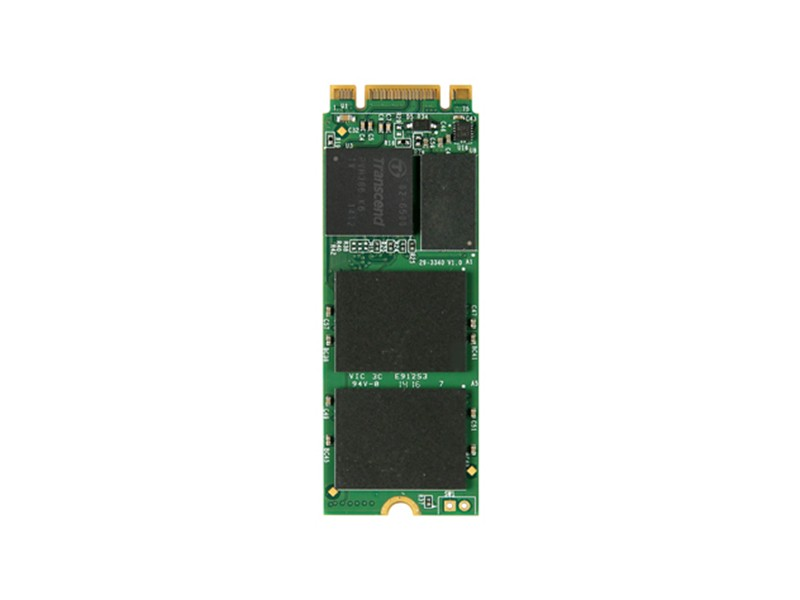
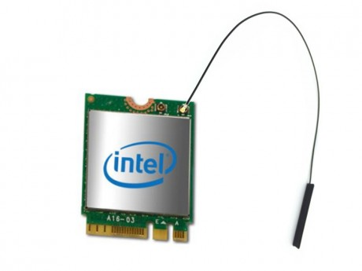
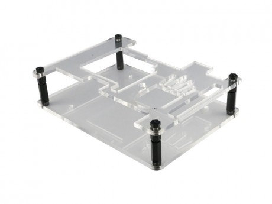
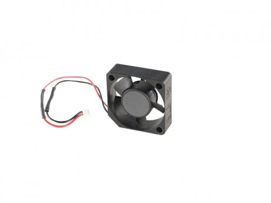

Official Accessories
In the UDOO Shop you can also find some accessories for the UDOO X86.
M.2 Modules
M.2 SSD Transcend MTS600
- Capacity: 128GB/256GB/512GB
- Dimensions: 60.0mm × 22.0mm × 3.58mm (2.36" x 0.87" x 0.14")
- Weight: 6g (0.21 oz)
- Storage Media: MLC NAND Flash memory
- Operating Voltage: DC 3.3V±5%
- Operating Temperature: 0°C (32°F) to 70°C (158°F)
For more info about this SSD module you can check the official Transcend page
M.2 Wi-Fi Intel dual band ac Wi-Fi + BT 4.2 5ghz + antenna adhesive
- Intel® Dual Band Wireless Wi-Fi AC and Bluetooth 4.2 module (AC3168)
- Dimensions: 4.9 x 3.5 x 0.4 inches
- Weight: 8.5g (0.3 oz)
For more info about this WiFi/BT module you can check the datasheet from the Intel website
Heads up! Intel® Dual Band Wireless Wi-Fi AC and Bluetooth 4.2 module (Intel® AC3168) was released only few time ago so we suggest to use a recent distribution to find the latest drivers already installed. If you are using a Linux distribution you need at least the v4.6 of the Linux Kernel to make this module work properly.
Cases
Acrylic Case for UDOO X86
Top and Bottom plexiglass acrylic case for UDOO X86
Cables and Others
CPU fan for UDOO X86 heatsink
You don’t need a CPU fan for your ordinary activities, but the fan will help you out with complex projects that require a lot of power. The CPU fan is applied on the heatsink. It has 3 pins and you can set up thresholds inside the BIOS to automate it. It’s pretty much plug-and-play.
Dimensions: 2.9 cm height, 2.9 cm width, 1cm depth
Cables and Power Supply
- HDMI to HDMI - HDMI A Male to A Male Cable 2MT: Supports Ethernet, 3D, 4K video and Audio Return Channel (ARC)
- MiniDP++ to HDMI - The miniDP++ to HDMI Passive Adapter lets you connect the UDOO X86 to a high definition (up to 1080p) monitors and projectors
- MiniDP++ to DP - The 2MT miniDP++ to DP Adapter lets you connect the UDOO X86 to a high definition (up to 4k) monitors and projectors
- SATA data and power cables for UDOO X86 - SATA data and power cables for UDOO X86 (CN18 and CN30 connectors)
-
Power Supply EU 12V 3A for UDOO X86 -
- OUTPUT: 12V, 3A
- Jack Dimensions: (Inner diameter) 2.5mm - (Outer diameter) 5.5mm.